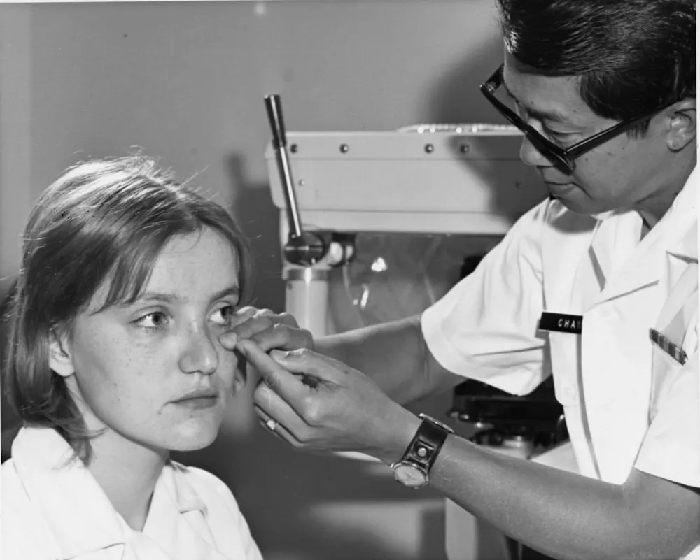

caso 01 · ejemplo
Queratocono progresivo en paciente de 24 años
Adelgazamiento corneal detectado en una revisión de rutina por visión fluctuante. Se realizó crosslinking para frenar la progresión y, seis meses después, anillos intraestromales para regularizar la córnea. La agudeza corregida pasó de 20/80 a 20/25 y la curvatura se mantiene estable en los controles.